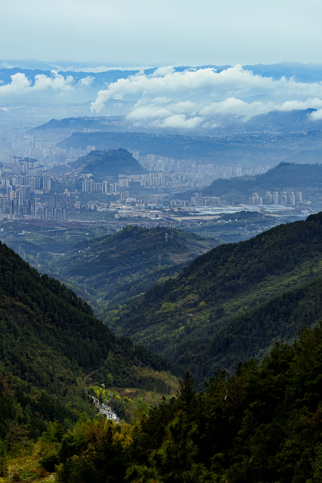

国家级森林公园 · 天然氧吧 · 避暑露营胜地 · 入选《重庆星空地图》
铁峰山国家森林公园位于重庆市万州区与开州区交界处，属城郊型森林公园，距万州城区仅约7公里。公园总面积9100公顷，海拔530至1355米，森林覆盖率高达90.1%，园内分布有植物869种、动物500余种，是一座名副其实的天然动植物宝库。
“铁峰山”之名源于一个有趣的演变——主峰形似凤凰，加上这一带铁矿储量较高，取“铁”字与“凤”字合称“铁凤山”，后经口口相传，谐音演变成了如今的“铁峰山”。公园集雄、险、奇、峻、美于一体，既有幽泉秀水、飞瀑溅玉，又有奇花如绣、芳草为茵，四季景观各具特色。
公园交通十分便捷，既有长江黄金水道，又有达万铁路、渝万高铁，还有便利的高速公路及五桥机场。万州人来到城郊边上，便可步入森林之中，感受大自然的原始之美。近年来，铁峰山已成为户外、露营爱好者的“天堂”，是重庆新兴的避暑胜地，并因能看到满天星空而入选《重庆星空地图》。
公园总面积
森林覆盖率
植物种类
夏季均温
铁峰山国家森林公园共分为贝壳山、金狮岭、凤凰山和铁佛寺四大景区，各具风姿，共同构成了这座国家级森林公园的独特魅力。
位于万州区高梁镇大碑村，因山的外形酷似贝壳而得名。贝壳山顶有一处非常陡峭的山崖，名为“望归崖”，背后流传着一段书生与少女的动人爱情故事。登顶可俯瞰层峦叠翠的壮阔景色。
山脊形似雄狮，晨曦时分金光洒满山脊，运气好还能偶遇云海翻涌。是公园内最具气势的观景点之一。
“铁凤山”原名的来源地。远眺山脊轮廓神似展翅凤凰，日落时分尤为震撼。凤凰岭上坐落着明代古刹凤仪禅院，是公园的核心人文景点。
古刹掩映在苍松翠柏间，禅意十足。适合静心徒步，沿途可能邂逅松鼠、鸟类等森林小精灵。
铁峰山国家森林公园拥有千峰耸翠、朝天门日出、凤凰岭云海、天鼓迎凤、石公石母、五池连珠、竹影凝翠等众多自然景点，让人目不暇接。
清晨登顶，红日从云海中喷薄而出，金光洒满千峰万壑。
云蒸雾罩，山峦如漂浮在云海之上的仙岛，气势磅礴。
群峰连绵，层峦叠嶂，满目苍翠，是公园最具代表性的景观。
两块天然巨石相依而立，形如夫妻，是园内著名的地质奇观。
五个天然水池沿山谷串联分布，如碧玉明珠镶嵌林间。
大片竹林在微风中摇曳，光影斑驳，幽静清凉。
铁峰山的主峰凤凰岭上，坐落着一座重庆著名的寺院——凤仪禅院。相传禅院始建于明代，占地曾达十万平方米，是渝东名刹，著名的佛教圣地。1950年禅院被毁，如今只残留着极为精美的石头柱子等遗迹，依稀可以遥想当年的禅院钟声和繁盛香火。
1999年5月，凤仪禅院在原址重建后恢复开放。虽然昔日辉煌已湮没在茫茫林海中，但铁峰山的养儿窝摩崖石刻却历经数百年沧桑而保存完好，让前来参观的游客无不感叹其神奇的魔力。丰富的佛教文化与优美的森林风光在此自然融合，使铁峰山成为自然与人文景观交相辉映的典范。
公园内还有清代军营遗址等历史遗迹，目前正积极创建国家级“两山”实践创新基地，探索绿水青山向金山银山转化的铁峰山实践经验。
铁峰山国家森林公园平均海拔800至1300米，夏季平均气温仅26℃，与城区38℃的高温形成鲜明对比。铁峰乡地处公园南麓，3.2万亩松林连绵不断，森林覆盖率达74%，得天独厚的自然条件让这里成为万州人避暑纳凉的首选之地。
公园内设有多个露营基地，游客可在此搭帐篷、拉吊床，沉浸式感受夏日清凉。松针铺就的天然地毯散发出草木清香，夜晚抬头便是满天繁星，是城市中难得一见的星空露营体验。
公园内有多条登山步道，蜿蜒于松林之间。清晨漫步林间，薄雾如轻纱般笼罩，鸟儿在枝头跳跃，清新的空气令人心旷神怡。从山脚登至凤凰岭约需1-2小时，沿途可尽享森林浴。
盛夏时节，当城市被热浪裹挟时，铁峰山以26℃的清凉、90%以上的森林覆盖率，成为游客争相奔赴的“天然空调房”。清晨的铁峰山，层层薄雾如轻纱般笼罩，车辆沿着蜿蜒山路缓缓而上，随着海拔渐升，温度悄然降低，阵阵清凉随风拂面而来。
铁峰山国家森林公园的森林景观富于季相变化，四季各有不同的美。公园内以马尾松和亚热带常绿落叶阔叶林为主，随季节变换呈现出丰富的色彩层次。
春季山花烂漫，杜鹃盛开，满山新绿；夏季林海苍翠，清凉宜人，是最佳的避暑露营季节。幽泉秀水间飞瀑溅玉，奇花如绣芳草为茵。
秋季红叶满山，层林尽染，是摄影爱好者的天堂；冬季运气好时还能邂逅雾凇奇观，银装素裹的铁峰山别有一番韵味。
※ 公园交通便利，既有长江黄金水道，又有达万铁路、渝万高铁，还有便利的高速公路及五桥机场。建议穿防滑鞋、携带防蚊液和充足饮用水。部分路段较陡，徒步需注意安全。以上信息供参考，具体以景区实际公告为准。
“铁凤化峰名自远，千山耸翠入云端。
凤凰岭上钟声杳，一片清凉在此间。”
——题铁峰山国家森林公园
从“铁凤山”到“铁峰山”，这座距城区仅七公里的国家级森林公园，正以它原始的森林风光与深厚的人文底蕴，静静等待着每一位热爱自然的旅人。